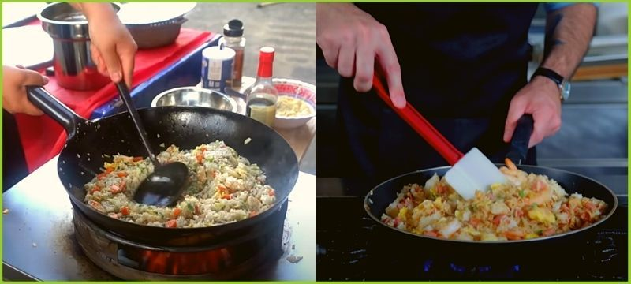

The Making of Egg Fried Rice
The secret to making the perfect egg fried rice
Fried rice is a favorite Asian staple. Here are some helpful hints for making this crowd-pleasing meal at home.
5 secrets for perfect fried rice
- Use cold, leftover cooked rice

Left in the fridge overnight, the rice grains will firm up, making it easier to separate and decreasing the chances of your fried rice turning out mushy. If you can’t wait, air freshly cooked rice to remove moisture and refrigerate the rice for a few hours before cooking.
- Use medium grain jasmine rice.

My choice for fluffy, sturdy grains that don’t clump or fall apart when fried. Short grain rice tends to be softer and to stick together.
- A blazing hot wok

An adequate amount of oil will ensure your ingredients don’t stick to the surface. That’s how restaurants achieve the smoky, “burnt” flavor in their stir-fried dishes. Remember to preheat your wok before adding ingredients.
- Use the biggest pan available

When you have too many ingredients, the wok doesn’t get hot enough and your ingredients will get soggy causing the rice to clump together. If you prefer, cook each ingredient individually (raw vegetables or meat, egg) and remove to separate plates. Return all the ingredients to the pan at the end for the final mixing and seasoning.
- Don’t overdo the saucy seasonings

Add just a few tablespoons of my chosen sauce for flavor and then add salt for saltiness and savor. Too much sauce will make your rice mushy.
Left in the fridge overnight, the rice grains will firm up, making it easier to separate and decreasing the chances of your fried rice turning out mushy. If you can’t wait, air freshly cooked rice to remove moisture and refrigerate the rice for a few hours before cooking.
My choice for fluffy, sturdy grains that don’t clump or fall apart when fried. Short grain rice tends to be softer and to stick together.
An adequate amount of oil will ensure your ingredients don’t stick to the surface. That’s how restaurants achieve the smoky, “burnt” flavor in their stir-fried dishes. Remember to preheat your wok before adding ingredients.
When you have too many ingredients, the wok doesn’t get hot enough and your ingredients will get soggy causing the rice to clump together. If you prefer, cook each ingredient individually (raw vegetables or meat, egg) and remove to separate plates. Return all the ingredients to the pan at the end for the final mixing and seasoning.
Add just a few tablespoons of my chosen sauce for flavor and then add salt for saltiness and savor. Too much sauce will make your rice mushy.